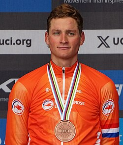

|

|
Información Personal
| Fecha de nacimiento: |
19 de enero de 1995 |
| Nacionalidad: |
Neerlandesa |
| Altura: |
1.84 m |
| Peso: |
75 kg |
| Equipo actual: |
Alpecin-Deceuninck |
Últimos Logros (Palmarés)
- Campeón Mundial de Ciclocrós 2023
- Campeón de Europa de Ciclocrós 2022
- Ganador de la Copa del Mundo UCI 2022-2023
- Campeón de los Países Bajos de Ciclocrós 2023
- Ganador del Superprestige 2022-2023
- Campeón de la X2O Trofee 2022-2023
|